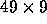

| Rubik's Cube |
The Rubik's cube has been the source of many fruitless hours of human puzzling. Now it affords a chance for some computer puzzling too! In case you have been on Mars for the past decade, a Rubik's cube is covered with 54 facelets, 9 facelets on each of its six sides. Each facelet may be a certain colour. Most cubes have their facelets painted in the six colours red, yellow, green, blue, white and magenta, but any six colours can be used. People adept at playing with the cubes soon come to recognise patterns which lead to a solution. They are able to do this regardless of the orientation of the puzzle, or of the set of six colours used for its faces.
You are to write a program to assist with this task of pattern recognition. Your program will be given the colours of the facelets of a pair of Rubik's cubes, and it must determine whether the two cubes are `the same'.
Two cubes are the same if one cube can be made to appear identical with the other by some combination of the following operations:
The input begins with an integer, n, indicating the number of pairs of cubes your program must
process. n pairs of cubes then appear. Each pair is represented as two flattened cubes shown side by
side, in the  character form shown in the example input below. Any twelve letters taken from the
set {A  Z}, {a
Z}, {a  z} may appear in place of the letters used in the example. A set of exactly six distinct
letters will be used for the first cube, and another set of six letters, distinct from each other but not
necessarily distinct from the first set, will be used for the second cube. A blank line separates each pair
of cubes from the next.
z} may appear in place of the letters used in the example. A set of exactly six distinct
letters will be used for the first cube, and another set of six letters, distinct from each other but not
necessarily distinct from the first set, will be used for the second cube. A blank line separates each pair
of cubes from the next.
For each pair of cubes in the input, your program should output one line; if the two cubes are the same by the above definition, your program should output:
same
If not, it should say:
different
1 . . . B B B . . . . . . | . . . b b b . . . . . . . . . B B B . . . . . . | . . . b b b . . . . . . . . . B B B . . . . . . | . . . b b b . . . . . . L L L T T T R R R U U U | l l l t t t r r r u u u L L L T T T R R R U U U | l l l t t t r r r u u u L L L T T T R R R U U U | l l l t t t r r r u u u . . . F F F . . . . . . | . . . f f f . . . . . . . . . F F F . . . . . . | . . . f f f . . . . . . . . . F F F . . . . . . | . . . f f f . . . . . .
same